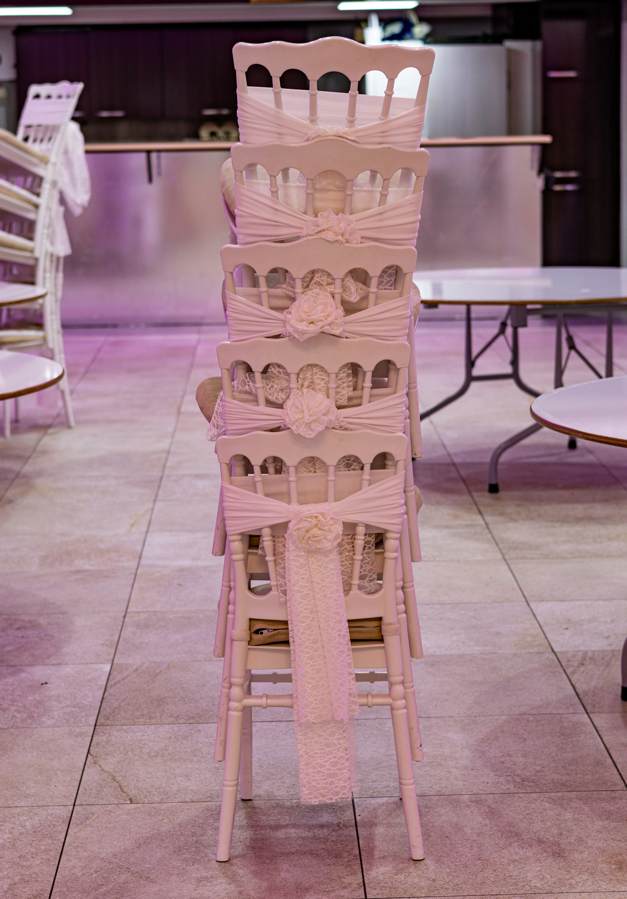

RESEARCH
Last song of the night at a wedding
What research says about how people remember the end of an experience, what that means for the last song at your reception, and how couples choose it.

- How people remember an experience tends to follow its high point and its ending, and how long it lasted makes little difference. A 2022 review of 174 results found this for good experiences too.
- In a small lab study of music, the strongest moment of a piece counted most in how people remembered it, and the last moment counted too.
- The rest of the night probably still matters. In a 2014 study, how people felt all the way through a song predicted their memory of it slightly better than the high point and the ending did.
The band or the DJ says this is the last song, and everyone who’s still at the reception heads for the dance floor. For a few minutes the whole party is in one place, and then the lights come up.
Does the last song really matter? #
It may matter more than you’d think. In a well-known 1996 study, 154 patients having a colonoscopy and 133 having a kidney-stone procedure rated their discomfort every minute. Afterwards, how they remembered the whole thing followed the worst moment and the last three minutes. How long the procedure lasted made no difference.
A hospital procedure isn’t a wedding, of course, but the same thing has turned up for good experiences too. In 2022, researchers combined 174 results from studies of this effect. They found that the high point and the ending together predicted how people remembered an experience about as well as the average of the whole thing did, and that how long it lasted had almost no effect.
Researchers have tested it with music as well. In a 2004 study, people listened to pieces of music and rated how strongly they felt from moment to moment, then said how they remembered each piece as a whole. The strongest moment counted the most in how they remembered it, and the last moment counted too. The length of the piece made very little difference. It was a small study, though, and it was done in a lab.
Can a great last song save a flat night? #
A great ending probably can’t make up for a flat night. In a 2014 study, 54 students each listened to 11 whole songs. The average of how they felt all the way through each song predicted what they remembered slightly better than the high point and the ending did.
Does a longer reception make a better night? #
A longer reception may not change how people remember it very much. In a 2008 study, 49 students texted how happy they were on each day of a vacation that lasted about a week. How long the vacation was had no effect on how they remembered it.
None of these studies was done at a wedding. The researchers looked at how people remember experiences in general, and at music in a lab. Still, we think they’re a good reason to choose the last song on purpose, and to put more thought into how the night ends than into adding an extra hour.
Should the last song be upbeat or slow? #
Either one can work. Some couples want one more song that everybody sings, and some want a slow last dance.
If you’re leaning toward a sing-along, late in the night may be a good time for one. Researchers who counted how much people sang along to 1,054 songs across 30 nights in five venues in the north of England found that people sang along more to songs played later in the night. Want some more ideas? Check out our post on how to get people to dance at a wedding.
How do you choose the last song? #
Start with the ending you picture, then pick the song, and think about the few songs that lead into it, too. We’re glad to plan those last few songs with you, so just tell us what you have in mind. If you’d like to see what our musicians already play, you can browse our song list.
Sources
- Redelmeier, D. A., and Kahneman, D. (1996). Patients' memories of painful medical treatments: real-time and retrospective evaluations of two minimally invasive procedures. Pain. Read the source
- Alaybek, B., and others (2022). All's well that ends (and peaks) well? A meta-analysis of the peak-end rule and duration neglect. Organizational Behavior and Human Decision Processes. Read the source
- Rozin, A., Rozin, P., and Goldberg, E. (2004). The feeling of music past: how listeners remember musical affect. Music Perception. Read the source
- Schäfer, T., Zimmermann, D., and Sedlmeier, P. (2014). How we remember the emotional intensity of past musical experiences. Frontiers in Psychology. Read the source
- Kemp, S., Burt, C. D. B., and Furneaux, L. (2008). A test of the peak-end rule with extended autobiographical events. Memory & Cognition. Read the source
- Pawley, A., and Müllensiefen, D. (2012). The science of singing along: a quantitative field study on sing-along behavior in the north of England. Music Perception. Read the source